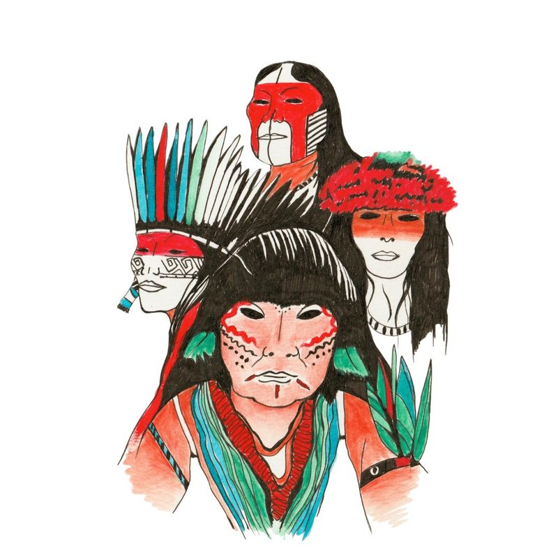
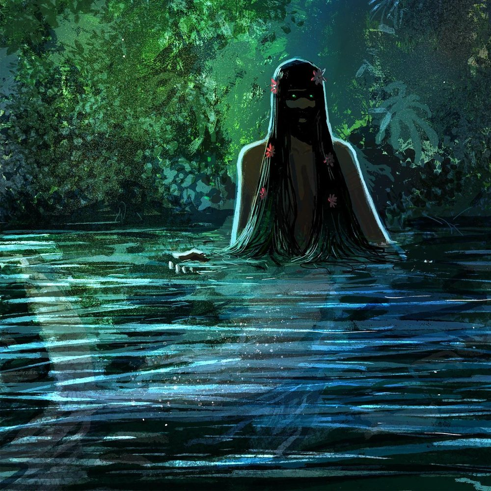
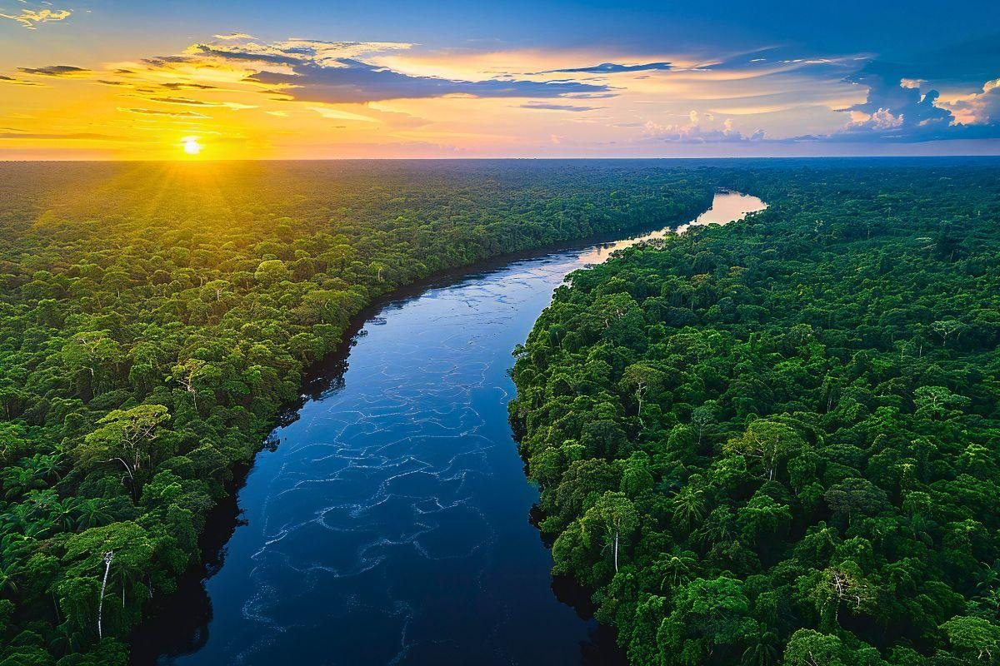

Antes de 1500,
já havia ciência.
A partir de O Karaíba, de Daniel Munduruku, uma leitura sobre o que as Icamiabas, Yara e os roçados de Maraí revelam sobre conhecimento, território e o papel das mulheres indígenas.
permanece.
e roçados.
Uma história do pré-Brasil.
O Karaíba: uma história do pré-Brasil, de Daniel Munduruku, devolve ao território uma memória que as historiografias oficiais costumam deixar de lado. Três pontos do livro foram aprofundados aqui com pesquisa: a lenda das Icamiabas, a figura de Yara, a Rainha das Águas, e o cuidado de Maraí com os roçados e com a água.
Lendas são histórias criadas para contar as verdades que nossas cabeças não conseguem alcançar.
DANIEL MUNDURUKU · CAPÍTULO 11O tempo em que as
mulheres mandavam.
A matriarquia mitológica e a ciência da autonomia feminina.
A presença da narrativa das Icamiabas no texto de Daniel Munduruku resgata a memória de arranjos sociais matriarcais e autônomos que contradizem frontalmente as historiografias oficiais que tentam naturalizar a dominação masculina ao longo do tempo. Ao trazer à tona o mito das mulheres guerreiras da Amazônia, a narrativa evidencia que a divisão sexual do trabalho e da autoridade é uma construção cultural e política, passível de contestação e transformação.

O diálogo comunitário registrado na obra ressalta a lembrança de um período em que o poder decisório e a força militar pertenciam integralmente às mulheres.
Voltaremos ao tempo das Icamiabas. O tempo em que as mulheres mandavam nos homens e eram mais fortes e determinadas que eles.
Capítulo 11, p. 60-61
A lenda das Icamiabas narra a insurgência de Kaxi contra a violência e a escravização impostas pelos homens às mulheres no passado primordial. Ao aprender as artes da luta e da sobrevivência, Kaxi organiza uma rebelião que inverte a estrutura de opressão e estabelece uma sociedade autogestionada por mulheres. Esse relato explicita que os saberes de autodefesa, organização política e gestão coletiva foram dominados e desenvolvidos de forma autônoma pelas figuras femininas.
Kaxi, filha da vitória-régia. Nasceu com o espírito predestinado a mudar aquele modo de viver. Quando Kaxi cresceu e foi tomando consciência das atrocidades pelas quais passavam as mulheres de seu mundo, tomou a decisão de lutar para que suas irmãs não fossem mais maltratadas pelos homens.
Capítulo 11, p. 61
A relevância das Icamiabas para esta discussão apoia-se no papel da oralidade e do mito como formas legítimas de produção, preservação e compartilhamento de conhecimento histórico e epistemológico. O mito não é tratado como simples fábula irreal, mas como uma ciência da memória que ensina verdades profundas sobre os perigos da opressão e a necessidade do equilíbrio comunitário.
Lendas são histórias criadas para contar as verdades que nossas cabeças não conseguem alcançar... Lendas são histórias que dizem que é preciso tomar cuidado com os caminhos que queremos seguir.
Capítulo 11, p. 62-63
As Icamiabas simbolizam, assim, o ápice da resistência feminina indígena. Elas servem de espelho e inspiração para jovens como Potyra e provam que a história da humanidade guarda em suas margens modelos sociais em que a liderança, a ciência militar e a governança estiveram plenamente nas mãos das mulheres.
Yara, a
Rainha das Águas.
Ecologia fluvial, hidrologia e conservação de ecossistemas.


As manifestações e ensinamentos da Yara, a “Rainha das Águas”, sintetizam o acervo etnoecológico e hidrológico dos povos originários ao estruturar uma complexa matriz de governança ambiental que compreende o ciclo hidrológico, o regime de vazões e a preservação do equilíbrio ecossistêmico nas bacias hidrográficas tropicais. Paralelamente, a atuação de pesquisadoras nas áreas de biologia, ecologia e hidrologia atua na tradução e validação teórica desse manejo ancestral, convertendo saberes tradicionais empíricos em modelos contemporâneos de conservação e justiça ambiental.
As narrativas fundacionais originárias, como se observa no romance O Karaíba, de Daniel Munduruku, articulam a figura da Yara não como uma mera alegoria folclórica, mas como a personificação de uma entidade orientadora e protetora dos territórios hídricos. Na cosmologia indígena, a “Rainha das Águas” opera como uma instituição socioambiental de regulação que estabelece tabus de pesca, delimita o uso de recursos comunitários e exige a observância rigorosa dos ritmos sazonais de cheias e secas dos rios tropicais. Os preceitos transmitidos por essa entidade codificam a própria mecânica dos ecossistemas fluviais: o pulso de inundação, a manutenção da vegetação ciliar, a preservação dos igarapés como berçários da biodiversidade e a interdependência entre a saúde da mata e a qualidade da água. A cosmopolítica associada à Yara conceitua a bacia hidrográfica não como um insumo inerte ou recurso explorável, mas como um organismo vivo e dotado de intencionalidade.
Essa perspectiva holística e ecocêntrica encontra forte apelo pedagógico quando associada à literatura contemporânea e a produções da cultura pop, como em narrativas audiovisuais do calibre de Moana ou na representação da teia biológica de Pandora em Avatar, obras nas quais o elemento hídrico e a biosfera são elevados à condição de sujeitos de direitos e agentes de sabedoria ancestral. É fascinante constatar como o arcabouço cosmológico originário antecipou em séculos preceitos teóricos que a ecologia política moderna e a hidrologia sistêmica levaram décadas para formalizar no meio acadêmico ocidental. Sob a lente dos povos da floresta, a interdição mítica exercida pelas divindades fluviais atua como um mecanismo preventivo contra o colapso dos mananciais, assegurando a sustentabilidade da fauna aquática e a segurança hídrica ao longo das gerações.
No âmbito das ciências ambientais contemporâneas, a contribuição de biólogas, ecólogas e hidrólogas tem sido central na descolonização da pesquisa científica e na integração do manejo preservacionista aquático indígena às ciências de ponta. Através da etnoecologia, da etnohidrologia e da gestão participativa de microbacias, essas cientistas lideram investigações que comprovam empiricamente a eficácia de práticas tradicionais, como o manejo rotativo de áreas alagáveis, a conservação de bioindicadores vegetais e a restauração de zonas ripárias. Ao traduzir a linguagem simbólico-mítica do saber ancestral em modelos epidemiológicos, métricas de integridade ecológica e diretrizes de governança ambiental, essas pesquisadoras desconstruíram a hegemonia utilitarista sobre os recursos hídricos. A convergência entre os ensinamentos da Rainha das Águas e a pesquisa acadêmica evidencia que a conservação sustentável dos rios tropicais depende do diálogo horizontal entre a ancestralidade indígena e a ciência contemporânea.
A terra e a água
como conhecimento.
A engenharia agrícola e o manejo ecológico pré-cabralino.
A preocupação de Maraí com os roçados e com o transporte de água pode ser entendida como expressão de conhecimentos práticos sobre agricultura e ambiente. Organizar o cultivo de mandioca, batata-doce e inhame exige observar as características das plantas, as condições do solo e da umidade, os períodos de plantio e colheita e as necessidades alimentares da comunidade. Essas atividades envolvem planejamento, experiência, seleção de variedades e transmissão de conhecimentos entre gerações.
Pesquisas brasileiras ajudam a demonstrar a importância das mulheres indígenas nesses processos. Um artigo publicado em 2024 no Boletim do Museu Paraense Emílio Goeldi analisa a relação das mulheres Tukano orientais com as manivas, hastes usadas no plantio da mandioca e com os instrumentos da roça e da casa-cozinha. O estudo mostra que o conhecimento sobre variedades, cultivo e processamento é aprendido na prática, com mulheres mais velhas, e que as mulheres são reconhecidas como “donas” das roças e dos conhecimentos relacionados à mandioca. Embora o artigo trate de comunidades Tukano atuais e de suas tradições, ele ajuda a compreender como esses saberes são transmitidos entre gerações.
A Embrapa também destaca que os povos indígenas tiveram papel decisivo na domesticação, seleção e diversificação da mandioca. O material “Técnicas tradicionais indígenas na cultura da mandioca”, publicado pela Embrapa Amazônia Oriental, descreve conhecimentos sobre variedades adaptadas a diferentes solos, policultivos, manejo agrícola e processamento da farinha. Esses procedimentos demonstram observação cuidadosa das plantas e do ambiente. A mandioca, especialmente algumas variedades, precisa passar por etapas de processamento para reduzir substâncias tóxicas; um artigo publicado na revista Química Nova explica que esse preparo reúne processos mecânicos, hidráulicos e bioquímicos e registra que, entre os Waurá, o plantio, a colheita e o processamento são atividades realizadas por mulheres.
A diversidade dos roçados também pode ser relacionada ao manejo ecológico. Cultivar diferentes espécies e variedades permite aproveitar características distintas das plantas e adaptar a produção às condições locais. A pesquisadora Ligia Simonian, em estudo disponível no repositório da Universidade Federal do Pará, discute o papel das mulheres amazônicas na conservação da biodiversidade e dos conhecimentos sobre variedades de mandioca, plantas medicinais e espécies florestais. Isso mostra que o conhecimento agrícola não se limita ao plantio: envolve preservar sementes e mudas, reconhecer espécies e manter a diversidade de cultivos.
Quanto ao solo e à água, pesquisas arqueológicas publicadas pelo Museu Paraense Emílio Goeldi e pela Sociedade de Arqueologia Brasileira mostram que populações indígenas pré-coloniais modificaram e manejaram suas paisagens. Entre as evidências estão solos antropogênicos conhecidos como Terra Preta de Índio, poços, caminhos, campos elevados e outras estruturas. Um estudo sobre o sítio arqueológico Cedro, no baixo Amazonas, menciona poços naturais e artificiais associados à ocupação antiga, alguns capazes de armazenar água da chuva. Essas descobertas demonstram planejamento e conhecimento ambiental coletivo. Entretanto, os vestígios arqueológicos nem sempre permitem identificar se foram mulheres ou homens que construíram cada estrutura.
Assim, a logística de buscar e transportar água, quando aparece na narrativa, pode ser interpretada como parte da organização do trabalho e da sobrevivência comunitária. Conhecer fontes de água, caminhos, distâncias e necessidades do grupo exige experiência do território e coordenação. Não é possível, porém, afirmar que toda estrutura hidráulica indígena foi criada por mulheres; o mais correto é reconhecer a contribuição feminina nas tarefas e nos conhecimentos documentados, sem atribuir a elas obras específicas sem evidência.
Portanto, a preocupação de Maraí com os roçados e com a água permite refletir sobre o papel histórico das mulheres indígenas como produtoras e transmissoras de conhecimentos agrícolas e ambientais. Suas práticas envolviam observação, experimentação, planejamento e preservação de conhecimentos sobre plantas, solo, água e alimentação. É importante lembrar que Maraí é uma personagem literária e que os povos indígenas eram diversos: as fontes consultadas mostram exemplos de comunidades e tradições específicas, não uma regra única para todos os povos do território brasileiro.
A organização dos roçados e o cuidado com a água revelam que a agricultura indígena dependia de conhecimento detalhado do ambiente, planejamento e aprendizagem coletiva. As mulheres tiveram papel central em muitas dessas práticas, especialmente no cultivo, na seleção e no processamento da mandioca e na transmissão de conhecimentos sobre a biodiversidade. Reconhecer essas atividades como formas de conhecimento técnico e ambiental é valorizar a participação das mulheres indígenas na história da ciência e da tecnologia no Brasil.
Fontes
- OLIVEIRA, Melissa Santana de. Mulheres, manivas e artefatos: corpo, gênero e socialidades no noroeste amazônico. Boletim do Museu Paraense Emílio Goeldi. Ciências Humanas, v. 19, n. 1, 2024. DOI: 10.1590/2178-2547-BGOELDI-2023-0029. Acessar fonte
- ALVES, Raimundo Nonato Brabo; HOMMA, Alfredo Kingo Oyama; MODESTO JUNIOR, Moisés de Souza. Técnicas tradicionais indígenas na cultura da mandioca: conhecimento ancestral e sustentabilidade alimentar. Belém: Embrapa Amazônia Oriental, 2026. (Documentos, 507). Acessar fonte
- SIMONIAN, Ligia. Mujeres y Conocimentos Ancestrales en la Amazonia, Brasil. Papers do NAEA, Universidade Federal do Pará, 2009. Acessar fonte
- A química dos povos indígenas da América do Sul. Química Nova, Sociedade Brasileira de Química. Artigo sobre técnicas indígenas de processamento e desintoxicação da mandioca. Acessar fonte
- Uma abordagem interdisciplinar do sítio arqueológico Cedro, baixo Amazonas. Boletim do Museu Paraense Emílio Goeldi. Ciências Humanas. Pesquisa sobre vestígios arqueológicos, terra preta e poços de água na região de Belterra. Acessar fonte
- COSTA, Jucilene Amorim et al. Caracterização de solos com terra preta: estudo de caso em um sítio tupi-guarani pré-colonial da Amazônia oriental. Revista de Arqueologia, Sociedade de Arqueologia Brasileira. Acessar fonte
As referências são disponibilizadas por instituições e periódicos brasileiros, como Embrapa, SciELO, Museu Paraense Emílio Goeldi, Universidade Federal do Pará e Sociedade de Arqueologia Brasileira. Algumas pesquisas tratam de comunidades indígenas atuais e ajudam a compreender a transmissão de saberes; outras são arqueológicas e tratam de vestígios pré-coloniais. Elas não devem ser confundidas: evidências atuais não comprovam automaticamente que todas as práticas eram idênticas no passado, e estruturas arqueológicas não identificam necessariamente o gênero de quem as construiu.
Imagens: ilustração das Icamiabas, Portal Amazônia; ilustração de Yara, Behance; rio e floresta na Amazônia, Mega Interessante.
Obra analisada: MUNDURUKU, Daniel. O Karaíba: uma história do pré-Brasil. Ilustrações de Mauricio Negro. São Paulo: Melhoramentos, 2018.
O que muda quando reconhecemos
quem produziu o conhecimento?
Mulheres indígenas cultivaram, protegeram as águas e guardaram a memória. Compartilhe sua reflexão pelo formulário.
Responder ao formulário ↗